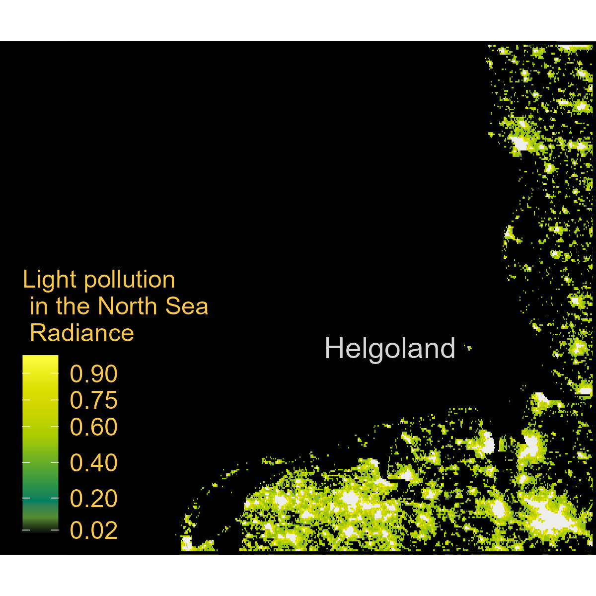

Light_pollution_tif<-'https://github.com/MiriamLL/data_supporting_webpage/raw/refs/heads/main/Blog/2025/LightPollution/viirs_npp_202300.tif'Light pollution
R
ggplot2
English
Y2025
In this month’s post, I’ll show you how to create a map using radiance data, often associated with light pollution, collected by the Visible Infrared Imaging Radiometer Suite (VIIRS).
Intro
The Visible Infrared Imaging Radiometer Suite (VIIRS) is aboard the joint NASA/NOAA Suomi National Polar-orbiting Partnership (Suomi NPP) and NOAA-platforms. VIIRS collects visible and infrared imagery along with global observations of Earth’s land, atmosphere, cryosphere, and ocean.
Data
Data are available at Light pollution map.
- The data can be downloaded by selecting the icons of the tools, then the square, wait until information appears, then click in the download icon.
To download test data in tif format click here.
Select the directory where the information is stored, or as here, use the data directly form the repository.
Use the package terra to use the function rast.
library(terra)The function rast reads your file as a formal class SpatRaster
Light_pollution<-rast(Light_pollution_tif)crs(Light_pollution)Use ggplot2 and tidyterra to create your plot.
library(ggplot2)
library(tidyterra)ggplot() +
geom_spatraster(data = Light_pollution) +
scale_fill_gradient(limits = c(0,1),low = 'black', high = '#f9c74f',
na.value = "grey93",
breaks = c(0.02,0.20, 0.40, 0.60,0.75, 0.87)
)+
NULLData frame
To manipulate convert to data frame.
Light_pollution_df <- as.data.frame(Light_pollution, xy = TRUE)
beepr::beep(sound=1)The function rename, allows to change the name of the column. The radiance information is in the third column.
Light_pollution_radiance<-Light_pollution_df %>%
rename(radiance=3)Check if the radiance values are plausible.
range(Light_pollution_radiance$radiance)Basic plot
Use the function geom_spatraster to plot the radiance data.
ggplot() +
geom_spatraster(data = Light_pollution) +
coord_sf(xlim = c(4.5,9), ylim = c(53,56),
label_axes = list(top = "E", left = "N", bottom = 'E', right='N'),
default_crs = sf::st_crs(4326))+
scale_fill_gradient(name='Light pollution \n in the North Sea \n Radiance ',
limits = c(0,1),
low = 'black', high = '#f9c74f',
na.value = "grey93",
breaks = c(0.02,0.20, 0.40, 0.60,0.75, 0.90)
)+
NULLChange theme
Change the arguments inside theme to adjust the looks of your plot.
ggplot() +
geom_spatraster(data = Light_pollution) +
coord_sf(xlim = c(3,9), ylim = c(53,56),
label_axes = list(top = "E", left = "N", bottom = 'E', right='N'),
default_crs = sf::st_crs(4326))+
scale_fill_gradient(name='Light pollution \n in the North Sea \n Radiance ',
limits = c(0,1),
low = 'black', high = '#f9c74f',
na.value = "grey93",
breaks = c(0.02,0.20, 0.40, 0.60,0.75, 0.90)
)+
theme_void()+
theme(legend.background = element_rect(colour = "transparent", fill = "transparent"),
legend.position = c(0.20,0.30),
panel.background = element_rect(fill = 'black'),
panel.grid.major = element_blank(),
panel.grid.minor = element_blank(),
panel.border = element_rect(colour = "black", fill=NA, size=1.5),
legend.text=element_text(color='#f9c74f',size=12),
legend.title=element_text(color='#f9c74f',size=12))+
NULLChange fill
Select some colors create a color palette.
color_NA <-"#000000"
color_K <-"#ffff3f"
color_J <-"#eeef20"
color_I <-"#dddf00"
color_H <-"#d4d700"
color_G <-"#bfd200"
color_F <-"#aacc00"
color_E <-"#80b918"
color_D <-"#55a630"
color_C <-"#2b9348"
color_B <-"#007f5f"
color_A <-"#548c2f"
your_palette<-c(color_NA,color_A,color_B,color_C,color_D,color_E,color_F,color_G,color_H,color_I,color_J,color_K)Include scale_fill_gradientn to use the color palette.
ggplot() +
geom_spatraster(data = Light_pollution) +
coord_sf(xlim = c(3,9), ylim = c(53,56),
label_axes = list(top = "E", left = "N", bottom = 'E', right='N'),
default_crs = sf::st_crs(4326))+
theme_void()+
theme(legend.background = element_rect(colour = "transparent", fill = "transparent"),
legend.position = c(0.20,0.30),
panel.background = element_rect(fill = 'black'),
panel.grid.major = element_blank(),
panel.grid.minor = element_blank(),
panel.border = element_rect(colour = "black", fill=NA, size=1.5),
legend.text=element_text(color='#f9c74f',size=12),
legend.title=element_text(color='#f9c74f',size=12))+
scale_fill_gradientn(name='Light pollution \n in the North Sea \n Radiance ',
limits = c(0,1),
colours = your_palette,
na.value = "grey93",
breaks = c(0.02,0.20, 0.40, 0.60,0.75, 0.90)
)+
NULLAdd text
Add text using the function annotate for reference.
ggplot() +
geom_spatraster(data = Light_pollution) +
coord_sf(xlim = c(3,9), ylim = c(53,56),
label_axes = list(top = "E", left = "N", bottom = 'E', right='N'),
default_crs = sf::st_crs(4326))+
theme_void()+
theme(legend.background = element_rect(colour = "transparent", fill = "transparent"),
legend.position = c(0.20,0.30),
panel.background = element_rect(fill = 'black'),
panel.grid.major = element_blank(),
panel.grid.minor = element_blank(),
panel.border = element_rect(colour = "black", fill=NA, size=1.5),
legend.text=element_text(color='#f9c74f',size=12),
legend.title=element_text(color='#f9c74f',size=12))+
scale_fill_gradientn(name='Light pollution \n in the North Sea \n Radiance ',
limits = c(0,1),
colours = your_palette,
na.value = "grey93",
breaks = c(0.02,0.20, 0.40, 0.60,0.75, 0.90)
)+
annotate("text", x = 7.885143539318454-1.6, y = 54.181291760152874,
label = "Helgoland",size=5,color='#d6d6d6',hjust = 0)